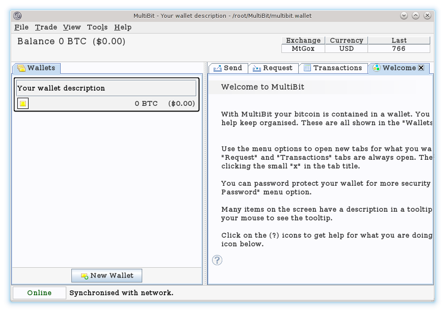

MultiBit
 MultiBit is a secure, lightweight, international Bitcoin wallet for Windows, MacOS and Linux.Features:
- Quick and easy to install across all major desktop operating systems (Windows, Mac, Linux)
- Secure by design - all private keys are kept encrypted on your local machine (or on a USB stick)
- Faster to synchronize - usually a minute or so
- Lighter - the stored data is much smaller (usually a few megabytes)
- Flexible - multiple wallets allow for a "current account", "savings account", "expenses" etc
- International - multiple languages (35+ at the last release)
 Donations accepted:
Donations accepted: